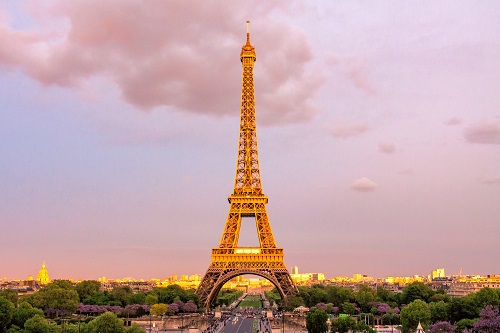
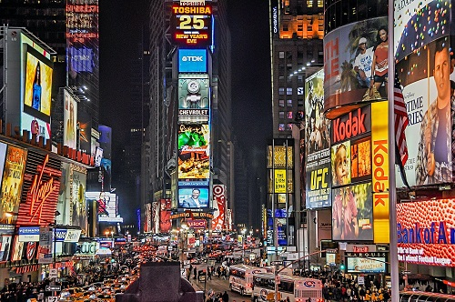

Thailand
Phi Phi Islands are a group of islands in Thailand between the large island of Phuket and the Malacca Coastal Strait of Thailand.
Phi Phi Islands are a group of islands in Thailand between the large island of Phuket and the Malacca Coastal Strait of Thailand.

Eiffel Tower is one of the most famous structures in the world. Eiffel Tower is named after a leading French architect and engineer. It was built as a symbol of the World Fair in 1889.

Times Square has become a global landmark and has become a symbol of New York City. This is a result of Times Square being a modern, futuristic venue, with huge advertising screens dotting its surroundings.